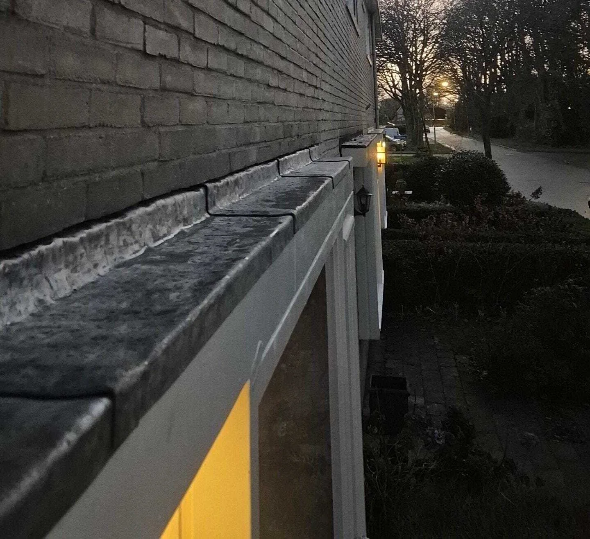
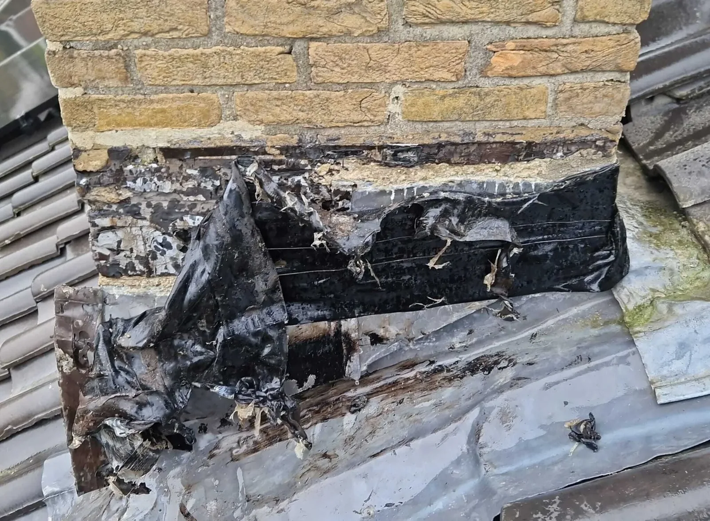
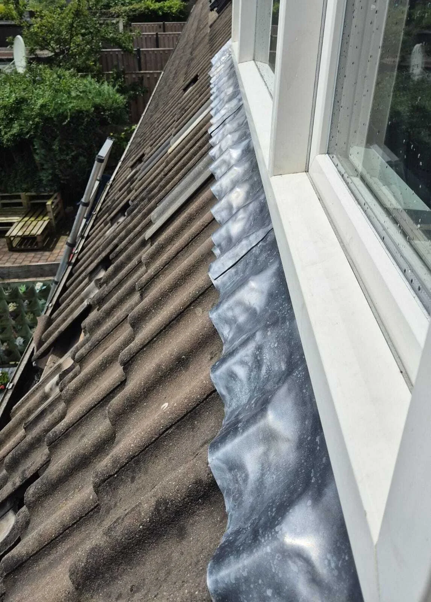
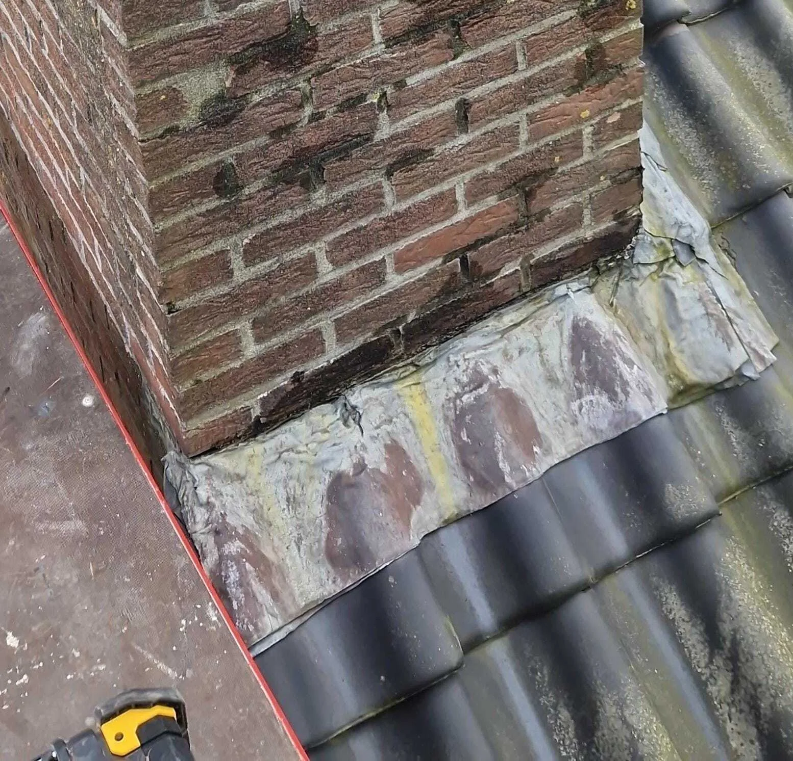
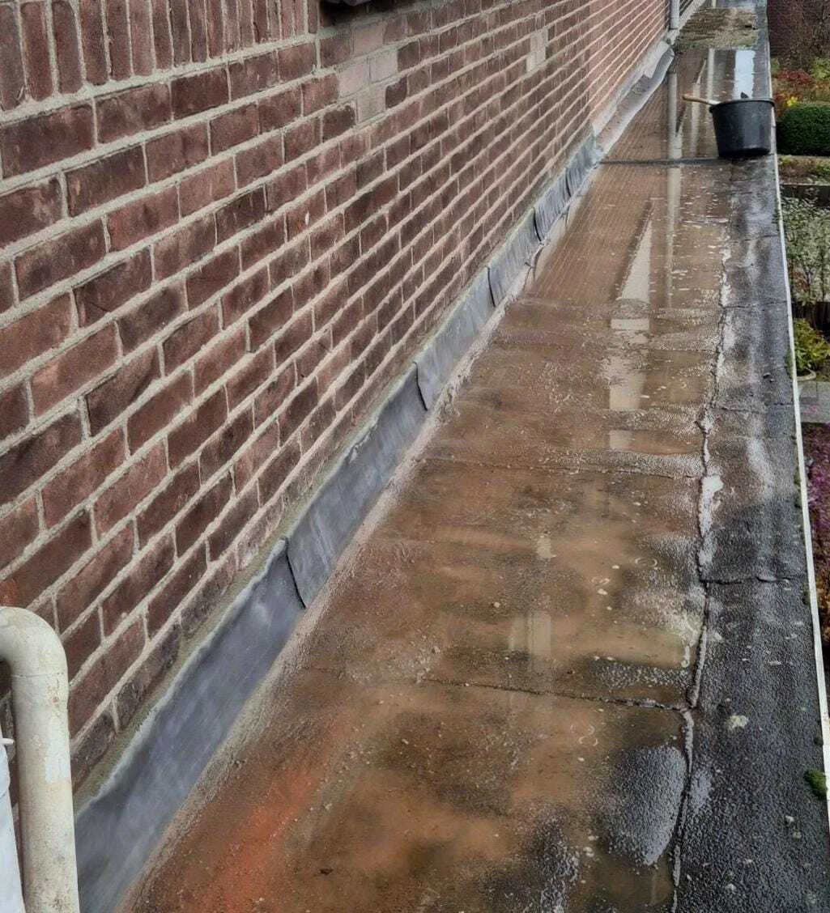
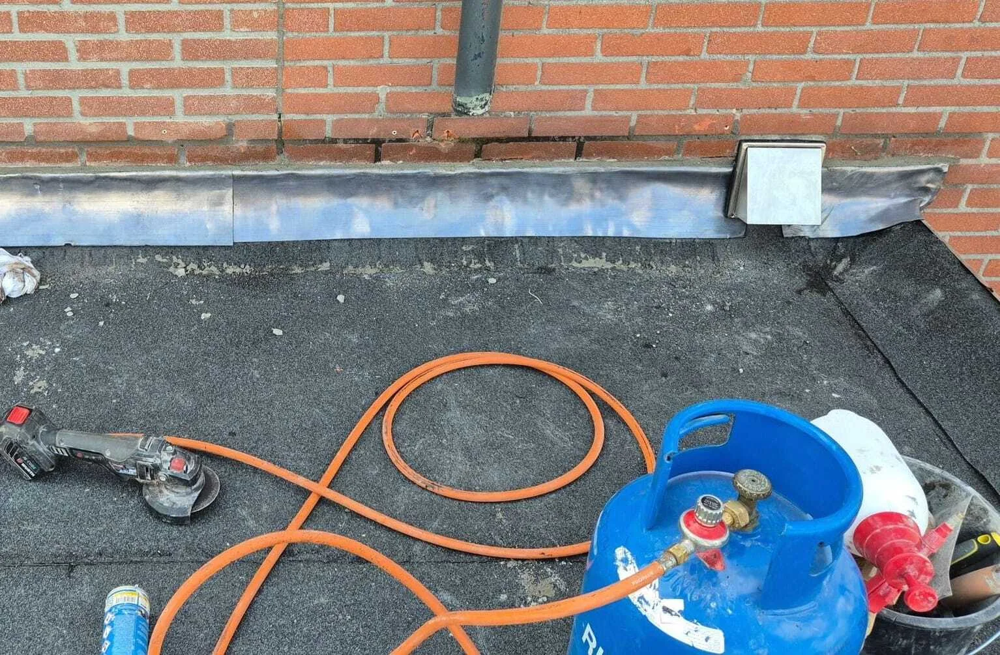
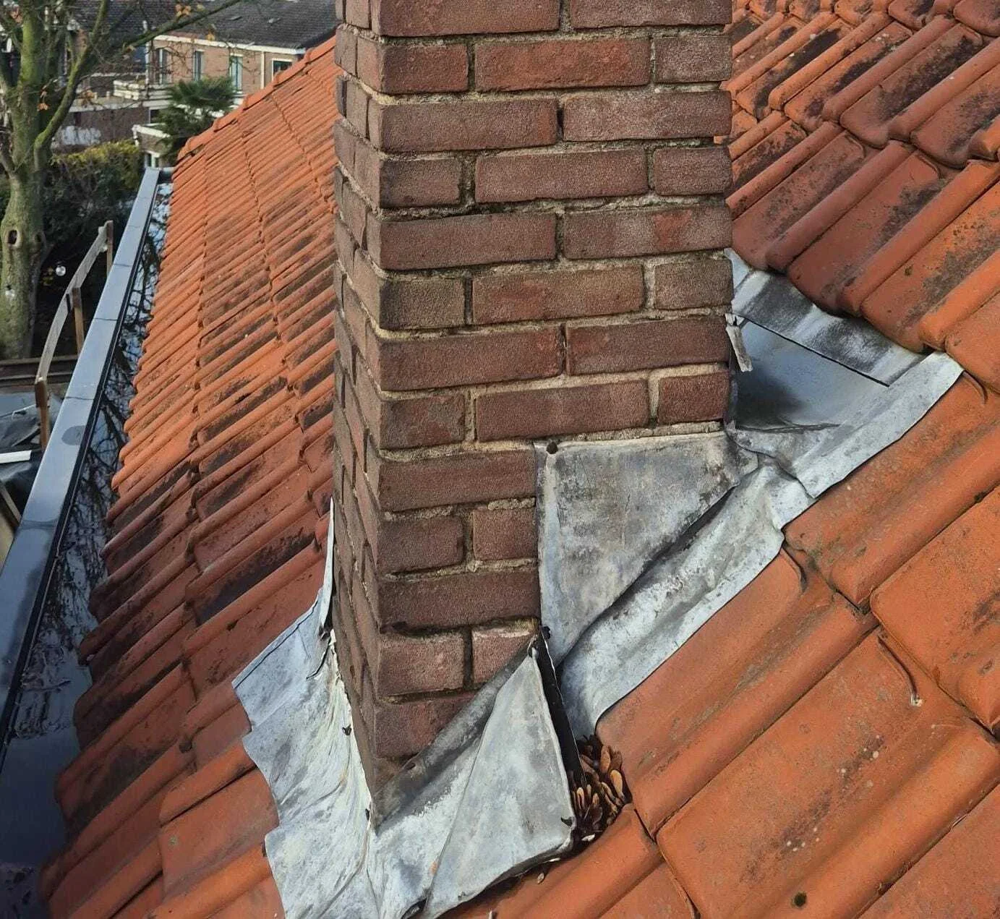
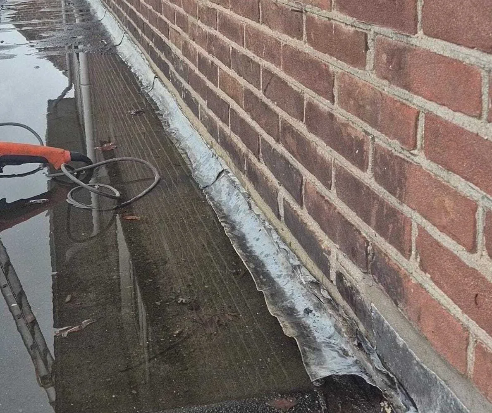

Cluster 11
Daklood
Een thematische kennisbanksectie met een pillarpagina en ondersteunende artikelen. Begin bij de hoofdpagina voor overzicht, of kies direct het specifieke onderwerp dat past bij uw situatie.

Artikelen in dit cluster
De pillar pagina geeft het overzicht. De ondersteunende blogs behandelen deelvragen, signalen, kosten, risico's en praktische keuzes.

Alternatieven voor dakloodOndersteunende blog
Daklood bij dakkapellen: kwetsbaar punt op het dakOndersteunende blog
Daklood bij schoorstenen: waarom hier vaak lekkages ontstaanOndersteunende blog
Daklood lekkage: hoe herken je het probleem op tijd?Ondersteunende blog
Daklood repareren of vervangen: wat is de beste keuze?Ondersteunende blog Daklood: toepassingen, slijtage en risico’s bij dakdetailsPillar pagina Daklood vervangen: zo gaat een professionele dakdekker te werkOndersteunende blog
Daklood vervangen: zo gaat een professionele dakdekker te werkOndersteunende blog
 Is daklood nog toegestaan? Regelgeving en milieu-aspectenOndersteunende blog
Is daklood nog toegestaan? Regelgeving en milieu-aspectenOndersteunende blog

Losliggend daklood bij schoorsteen of dakkapelOndersteunende blog
Scheuren in daklood: oorzaken en gevolgenOndersteunende blog Tijdelijke reparatie van daklood: wat werkt wel en wat nietOndersteunende blog
Tijdelijke reparatie van daklood: wat werkt wel en wat nietOndersteunende blog